Last Updated:01/23/2007
|
 |
Last Updated:01/23/2007 |
Welcome to the home page of the Clan Hamilton Society.
|
|
An opportunity to own a piece of Holyrood Palace Furnishings We are pleased to announce that the Duke and Duchess of
Hamilton are offering for sale a couple of their art collection items. The
armchair is from the Hamilton Apartments in Holyrood Palace.
Just click on either photo obtain detailed information about the piece. This is
an open sale available to both Clan Hamilton Society members and non-members. |
|
I have been asked by our Chief Executive to pass on some information to you in the hope that you could maybe pass it onto the rest of the Clan Hamilton Society members. As I am sure you are all aware, Lennoxlove House is current undergoing an extensive refurbishment programme which involves the House being closed from January 2006 until July 2007. The whole House is currently completely bare of furniture and furnishing and is shrouded in scaffolding at the present time. From 1st August - 18th August 2006 there will be an Exhibition entitled "Treasures of Lennoxlove" at Lyon and Turnbull's Showroom at 33 Broughton Place, Edinburgh. The Exhibition will be open from 11am - 5pm every day apart from Sundays. It is a free Exhibition and we thought that maybe if any of your members found themselves in Edinburgh during that period, they may be interested in visiting the Exhibition. On display will be some of the important paintings and pieces of furniture from within the Hamilton Collection and of course the Death Mask, the Mary, Queen of Scots ring and Silver Casket. I hope all is well with you and thank you for your help. If you would like any more information, please do not hesitate to contact me. Lyndsay J Stuart (Mrs) Private Secretary to the Duke of Hamilton |
Excavating a Scottish rebel’s luxurious stronghold - Cadzow CastleFrom British Archaeology website Excavations this year at Cadzow Castle in Lanarkshire have shed light on the rise and fall of one of Scotland's great noble families of the 16th century. Cadzow, one of the seats of the Hamilton family, was built in the 1520s or 1530s by Sir James Hamilton of Finnart, a military engineer and architect who was Master of the King's Works for James V. However in 1579, during the reign of Mary, Queen of Scots - while Mary was imprisoned, and the country was ruled by regents on behalf of young James VI - the Hamiltons opposed the government and their castle was besieged. It has remained a ruin ever since. At the heart of the inner ward was a large mound, which this year's dig has revealed covers the remains of a tower house - the castle's main building. Great chunks of masonry, including doorways and the tops of walls, were found upside-down, with evidence of burning, indicating that the castle had been blown to pieces by the attacking forces. According to Peter Yeoman, of Historic Scotland which sponsored the dig, it was 'most unusual' to attempt complete demolition in such circumstances. 'This shows how determined the regent's forces were to suppress the power of the Hamiltons.' The castle had been built fit for a king. About 800 fragments of luxurious green-glazed floor tiles were found, impressed with the letters J and M, probably representing King James V and one of his wives (either Madeleine or Mary). Identical tiles - from the same kiln, even the same firing - had been used to floor a principal chamber at the royal palace of Linlithgow some 20 miles away, where Sir James Hamilton was carrying out works. It seems likely that the noble architect appropriated any unused tiles from Linlithgow for use in his own home. During the 18th century, Cadzow Castle was incorporated as a romantic ruin into the grounds of nearby Hamilton Palace, the main seat of the Dukes of Hamilton (whose fortunes by then had revived). However, in the mid-20th century Hamilton Palace itself became derelict when its owners could no longer afford the maintenance costs It is now the site of a trading estate and shopping mall called 'Hamilton Palace' on the outskirts of Hamilton town. |
|
The Hamilton Genealogical Society has organized a DNA project for the male line of the Hamilton family. The DNA project uses DNA markers from the male Y chromosome (reason for males only) to trace family origins. This project can provide valuable clues to possible linkage to various families past those in documented form.
For the latest results visit site Latest Hamilton DNA Results. Some highlights of the current summary are the following. Results are given for over 70 participants. About two thirds of the participants can be placed in one of seven different groups (A to G) with reasonably close matches within each group. Groups A and B are the most populous with about half of all participants in one or the other of these groups. The Group D participants are all documented descendants of Alexander Hamilton, a USA founding father and first secretary of the treasury, so his DNA profile is now known. Most of the participants were not aware of any relationship to other participants so those who match others in the various groups now have new avenues to explore the derivation of their lines. Thus, I would like to encourage each of you to consider participating in the project because it may help you unravel details of your Hamilton line. Most of these participants were previously unaware
of the relationships that the DNA results turned up. As we obtain more results
we are beginning to see relationships among several people with known
ancestors from Ireland, Scotland, and the early American colonies. Thus, each
of you is encouraged to consider having your Hamilton line DNA analyzed; the
more participants we have, the more possibilities for finding new
relationships and extending the knowledge of your Hamilton line. To make it
easier to participate, the application procedure has been Check it out. And if you are a male with the Hamilton surname, consider participation in the program. The more participants that we have the better we will be able to understand the results. Further information about the Hamilton DNA project can be found at the web site for Hamilton DNA Project. |


| Clan Hamilton Guestbook
View our Guestbook |

| This Scottish Sites Web Ring site is owned by the Clan Hamilton Society. Want to join the U.S. Scots Scottish Sites Web Ring? [Skip Prev] [Prev] [Next] [Skip Next] [Random] [Next 5] [List Sites] |

Page Visits:
since
01/14/2005
Maintained by John
R Hamilton
This page last updated
01/23/2007